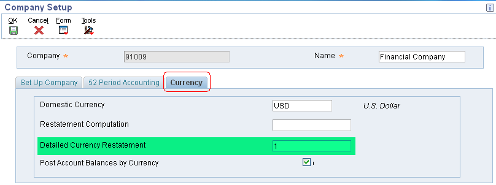

| Purpose |
| Overview |
| Scope |
| Details |
| Program Functionality |
| Setup |
| Multi-Currency Conversion Constant |
| Intercompany Settlements |
| A/P Offset Method and A/R Offset Method |
| Company Setup |
| Ledger Types Setup |
| AAI Setup |
| Exchange Rate Setup |
| Processing Options (R11411) |
| Data Selection (R11411) |
| Running the Detailed Currency Restatement Program (R11411) |
| Reviewing the Report |
| Common Error Messages |
| Reviewing and Approving Detailed Currency Restatement Transactions |
| Posting Detailed Currency Restatement Transactions |
| Frequently Asked Questions |
Detailed Currency Restatement enables you to maintain an additional set of account books in an alternate stable currency with a different ledger type (XA) for reporting purposes. The currency on the XA is typically a currency that does not fluctuate as compared to the company's original currency. For example, by restating transactions from Colombian pesos (COP) to U.S. dollars (USD), a Colombian company can generate meaningful comparisons of current to historical amounts by using the more stable U.S. dollar.
Detailed currency restatement is typically used for following reasons:
A company operating in a highly inflationary currency has to maintain a second set of books in an alternate currency for financial analysis and reporting.
A company has to report final results at the transaction level in both the local currency and the currency of the parent company.
A company has to maintain dual reporting for certain classes of general ledger accounts, such as fixed assets, inventory, and equity accounts, to meet accounting standards.
This document is intended for Finance Functional users who will be involved in the multi currency processing in the General Accounting system.
You run the Detailed Currency Restatement program (R11411) to apply current exchange rates to transactions when restating amounts from one currency to another. Based on a processing option, this program creates a second restated ledger of transactions for the alternate currency ledger (XA) only, or for the XA, YA (domestic origin), and ZA (foreign origin) ledgers.
Typically, the Detailed Currency Restatement program uses exchange rates to convert domestic currency amounts in the AA (actual amount) ledger to alternate currency amounts in the XA ledger in the F0911 table. The exception to this is when amounts in the foreign currency ledger (CA) are in the same currency as the XA ledger. In this case, the program copies the CA ledger amounts to the XA ledger; it does not restate the AA amounts.
The Detailed Currency Restatement program creates a corresponding transaction in the alternate currency in the XA ledger for every transaction in the domestic currency that is within the range or ranges of accounts specified in the CRxx AAIs.
Detailed currency restatement is integrated into the EnterpriseOne General Accounting, EnterpriseOne Accounts Receivable, EnterpriseOne Accounts Payable, and EnterpriseOne Fixed Assets systems. This restatement method includes special functionality for voids, reversals, and gain and loss calculations and enables you to maintain a second set of transactions in a stable currency for reporting purposes.
Transactions Selection Criteria
Based on the data selection provided, the Detailed Currency Restatement program selects only those companies that are set up for detailed currency restatement in the F0010 table for processing and ignores all other companies. This has a positive impact on performance and helps improve processing time.
The Detailed Currency Restatement program processes all posted transactions in the actual amount (AA) ledger of the F0911 table that meet this criteria:
Company: The company on the transaction is set up for detailed currency restatement. The Detailed Currency Restatement field is set to 1 for the company in the Company Names & Numbers program (P0010).
AAIs: The account on the transaction is within the account ranges set up for AAI item CRxx.
GLALT9 Field (F0911): The transaction contains a blank value in the Currency Update (ALT9) field in the F0911 table.
Transactions Created
For each transaction in the AA ledger that meets this criteria, the R11411 program creates a new F0911 transaction with following attributes:
For each transaction, the program updates the ALT9 field from blank (not processed) to one of these values:
Before you can use detailed currency restatement, you must set up certain information that the system uses during processing. Unlike other setup programs, which you access using different menu options, you can perform all of the setup for detailed currency restatement from one interactive form called Detailed Currency Setup program (P11410). This form has links that you can select to access the programs that you need to set up or revise information.
NOTE: For more information on how to setup General Accounting Constants, refer to following documents:
You use the Work with Companies program (P0010) to set up your companies for detailed currency restatement.

Enter a following value that identifies whether a company allows detailed currency restatement processing:
You enable detailed currency restatement for Default Company 00000 and the companies for which XA entries need to be created.
When you work with multiple currencies, the system uses ledger types AA (actual amounts) and CA (foreign currency amounts). To perform detailed currency restatement, the system uses the XA, YA, and ZA ledger types. You must set up the alternate currency (XA) ledger for detailed currency restatement and, optionally, the domestic origin (YA) and foreign origin (ZA) ledgers.
If you use the Detailed Currency Restatement program to record transactions by domestic origin and foreign origin, the system updates the YA and ZA ledgers based on the original entry. If the original entry was a domestic transaction, the system updates the YA ledger. If the original entry was a foreign transaction, the system updates the ZA ledger.
The information in following table shows how the system updates certain transactions for detailed currency restatement:
| Original Transaction | Alternate Ledger Updated |
|---|---|
| Domestic transaction in the AA currency | No foreign currency (CA) amount exists. The system:
|
| Foreign transaction in the XA currency | The system copies the foreign currency (CA) amount to both the XA and ZA ledgers. |
| Foreign transaction in a currency other than the XA currency |
The system:
|
Set up AAI items for using Detailed Currency Restatement method:
Enter exchange rates to convert domestic currency amounts in the AA ledger to alternate currency amounts in the XA ledger. If you do not set up exchange rates with a specific effective date, the Detailed Currency Restatement program uses the exchange rate of the last effective date.

You use the Work with Currency Exchange Rates program (P0015A) to set up and control the exchange rates for various currencies.
Before you run the Detailed Currency Restatement program:
Ledgers Tab
1. Additional Ledgers
2. Units Ledger
Post Tab
1. Post Version
Automatic JEs Tab
1. Automatic JEs
Exchange Rate Tab
1. Exchange Rate
Use data selection to select the companies in which to restate transactions. If you do not select specific companies, the restatement program reads transactions for all companies that are set up for detailed currency restatement. This impacts processing time.
You can run Detailed Currency Restatement Program (R11411) to generate restated entries as follows:
When you setup Detailed Currency Restatement for the first time, you should run the Detailed Currency Restatement program from the menu or batch versions instead of from the General Ledger Post program. All transactions that were previously entered must be processed for Detailed Currency Restatement; therefore, the program requires additional processing time and might run more efficiently during off-peak hours.
If you want to ensure that your XA ledger has the most up to date information, you can call Detailed Currency Restatement Program (R11411) from the General Ledger Post program (R09801) by activating a processing option in the General Ledger Post program (R09801) under the Versions tab. To activate the R11411 from R09801, you designate the version of the Detailed Currency Restatement Program (R11411) that you want to run.
The General Ledger Post program posts an individual batch and sends the batch number and type to the Detailed Currency Restatement program. The restatement program restates transactions for the companies within the batch that are set up for detailed currency restatement and, if applicable, creates balancing journal entries. If the Post Version processing option in R11411 is set appropriately, the post program posts the restated transactions and, if applicable, the balancing journal entries. This cycle is repeated until all batches are posted, all transactions within those batches are restated, and, if applicable, all balancing journal entries are created and all batches of restated and balancing journal entries are posted.
If the program finds an error for a company, it generates an error report before any processing takes place and does not update the XA ledger for that company. If the program finds errors within a batch, the message "Batch Completed With Some Errors. See Work Center for Details." appears on the error report. You must resolve the problem and run the program again.
If no errors exist, the message "No Errors. Batch Will Post." appears on the error report.
Following table lists common error messages that might appear on the error report when you run the Detailed Currency Restatement program (R11411) and their causes:
| Error Message | Cause |
|---|---|
| Daily Transaction Rate Not Set Up | No current exchange rate and no prior effective date are set up to restate the domestic currency in the alternate currency. |
| Multicurrency Conversion Not Set Up | The General Accounting constant for Multicurrency Conversion is set to N. Set the constant to either Y (multiplier) or Z (divisor) to activate multicurrency processing. |
| CR01 or CR02 AAI Not Set Up | The ranges for AAI items CRxx are not set up, or the setup is incorrect. |
| CR AAI Account Invalid or Not Set Up | The account number for AAI item CRxx is not in the chart of accounts for the company. |
| Version of Post Specified Invalid | You entered an invalid version number for the post program in the processing option for the Detailed Currency Restatement program (R11411). |
| XA Ledger Not Defined | The XA ledger is not set up in UDC table 09/LT. |
| Currency Invalid for XA or ZA Ledger | An invalid currency code for the XA or ZA ledger is specified on the Set Up Ledger Type Rules form. The YA ledger is not assigned a currency code. |
| YA or ZA Ledger Not Defined | You set the processing option to create records in the YA and ZA ledgers, however, these ledgers are not set up in UDC table 09/LT. |
Access the Work With Batches application (P0011) to review and approve the Detailed Currency Restatement Transactions generated by R11411 report.
After you run the Detailed Currency Restatement program (R11411), verify the accuracy of the detailed currency transactions and, if applicable, approve the transactions before posting them to the general ledger. Transactions created by the Detailed Currency Restatement program have the same batch number as that of the original AA transactions. The batch type is XX.
You can also review the alternate currency ledger (XA), along with the original actual amounts ledger (AA), on the Work with Account Ledger Inquiry application (P09200).
After you review and approve the detailed currency restatement transactions, you must post the XX batches created by the restatement program to the XA ledger. If you run the post program for a batch type other than G to create XX batch types, you must post that XX batch separately to the XA ledger.
Question 1: How do I restate using the YA and ZA ledgers?
Answer 1: To perform detailed currency restatement, the system uses the XA, YA, and ZA ledger types. Though setting up the alternate currency (XA) ledger for detailed currency restatement is required, its optional to setup the domestic origin (YA) and foreign origin (ZA) ledgers. While setting up Ledgers Types in P0025, ensure the following:
For more information on how to setup these ledger types, refer to Multicurrency Ledger Types section in Overview of Ledger Types Setup.
The Detailed Currency Restatement program (R11411) creates the restated entries depending upon the Additional Ledgers processing option:
The YA and ZA ledgers are updated based upon how the transaction is originated:
Example:
For example, consider a Colombian company that would like to restate transactions from Colombian pesos (COP) to U.S. dollars (USD). Detailed Currency Restatement is used to create XA ledger transactions, where the XA ledger is defined as USD. When the Additional Ledgers processing option of R11411 specifies that amounts are to be restated in the XA, YA and ZA ledgers, the following three possible types of transactions can result in this case:
| Original Transaction Type | Ledgers Restated |
|---|---|
| Domestic transactions in COP. |
For this entry, the transaction currency is the same as the company currency. The system:
|
| Foreign transactions in USD. | For this entry, the transaction currency equals the XA ledger currency. The system copies the CA ledger amount (USD) to both the XA and ZA ledgers (USD). |
| Foreign transaction in CAD. | For this entry, the transaction currency is a currency other than the XA ledger currency. The system:
|
Question 2: How can I calculate Unrealized Gain/Loss for XA Ledger of a domestic voucher?
Answer 2: Per the current design, you cannot calculate Unrealized Gain/Loss for a domestic voucher using Detailed Currency Restatement program (R11411). Enhancement Bug 10843688 has already been entered requesting the ability to calculate unrealized gains and losses in the XA ledger. As a workaround, you may consider to reset the GLALT09 field for the XA ledger F0911 record before running the R09415 report. However, this should be performed with caution and a backup should always be taken when performing direct table updates.
Question 3: Why does R09801 create XA entries while posting receipt transactions entered in domestic currency?
Answer 3: Depending on whether a receipt or payment is a domestic or foreign transaction, the system uses different calculations to create restatement gain and loss records when you post the receipt or payment.
For domestic transactions, the system calculates the gain or loss amount between the AA (domestic) and XA (alternate) currencies and creates gain and loss records with a document type of RG (receipt gain or loss) or PG (payment gain or loss). This amount is due to exchange rate fluctuations between the invoice and receipt dates or the voucher and payment dates and is written to the XA ledger:
Question 4: Why does the F0911 record for XA Ledger contains incorrect value of CRCD in case of receipts?
Answer 4: During receipt processing, the system creates two different XA records. One XA record is created at the time of posting (R09801) with batch type 'RB' whereas the other is created during restatement by R11411 with batch type 'XX'. Example:
Conclusion: The F0911.GLCRCD for XA created during R09801 will be the denominated currency code setup in Ledger Type Master Setup (P0025). In this case the batch type created by R09801 will not be 'XX' rather 'RB'. When R11411 is run, the XA will be created as batch type 'XX' and the F0911.GLCRCD will be created with the transaction currency code SGD.
Question 5: Why doesn't the data selection on batch type and batch number on the R09801/ZJDE0001 pass to the R09801/ZJDE0041?
Answer 5: When the R09801 (post UBE) has the version for the detail restatement set in the processing options will not be able to pass the Batch type and Batch number to the R11411 (detail restatement UBE) . This is because the UBE (R11411) does not have those data items in the data selection.
As a consequence the R11411 will not be able to pass the beginning information from the R09801/ZJDE0001 to the R09801/ZJDE0041. The Batch type and number gets lost between the R09801/ZJDE0001 and the R11411.
Question 6: Can the restatement journal entries be deleted or voided?
Answer 6: If it becomes necessary to delete or void the journal entries created by the R11411 these can be deleted in P0911 (Work with Journal Entries). The journal entries can be found by searching on the batch number.